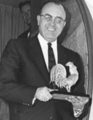
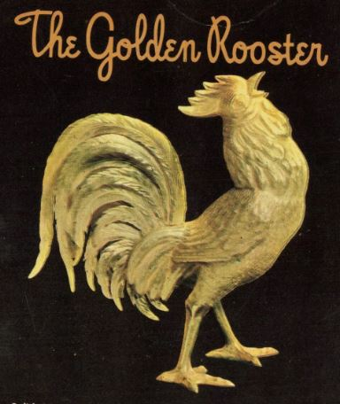

Perhaps it was a bird-brained idea, perhaps not
In 1957, Dick Graves, the owner of the Nugget, in Sparks, Nevada, commissioned a handcrafted, solid gold rooster for display in one of his hotel-casino restaurants, the Golden Rooster Chicken House, then under construction.
The final product was 9 inches tall and embodied about $40,000 worth of 18-carat gold.
After a year or so of the gold bird drawing attention in its burglar-proof coop, Graves found himself in legal trouble over the fowl.
United States law prohibited citizens from owning more than 50 ounces of any precious metal unless it was a piece of art. Graves' rooster weighed a whopping 255 ounces. The government, deeming the bird an advertising gimmick rather than an objet d'art, seized it in 1960 and sued its owner for violating the 1934 Gold Reserve Act.
Up to a Jury
During a trial two years later, jurors were tasked with deciding whether Graves had been using the rooster for artistic purposes or not. Three experts gave divergent testimony on that issue.
Graves' attorney, Paul Laxalt, said he was "an innocent businessman caught in the web of complicated and confused government" (Reno Evening Gazette, March 29, 1962). "The holding of Dick Graves of this little rooster is not going to upset the international gold balance. It would be a terrific shame to have the rooster melted down."
After struggling to decide, the jury ultimately ruled in Graves' favor, concluding his rooster was exempt from the federal rule. The government returned the precious metal poultry to Graves, who promptly returned it to its casino roost. The prosecutor, though, filed an appeal.
One and a half months later, the U.S. government abandoned the case for good. As for the rooster, it paraded its shiny plumage at the Nugget until July 2014, when it was sold for $234,000 at the Coeur d'Alene Art Auction.